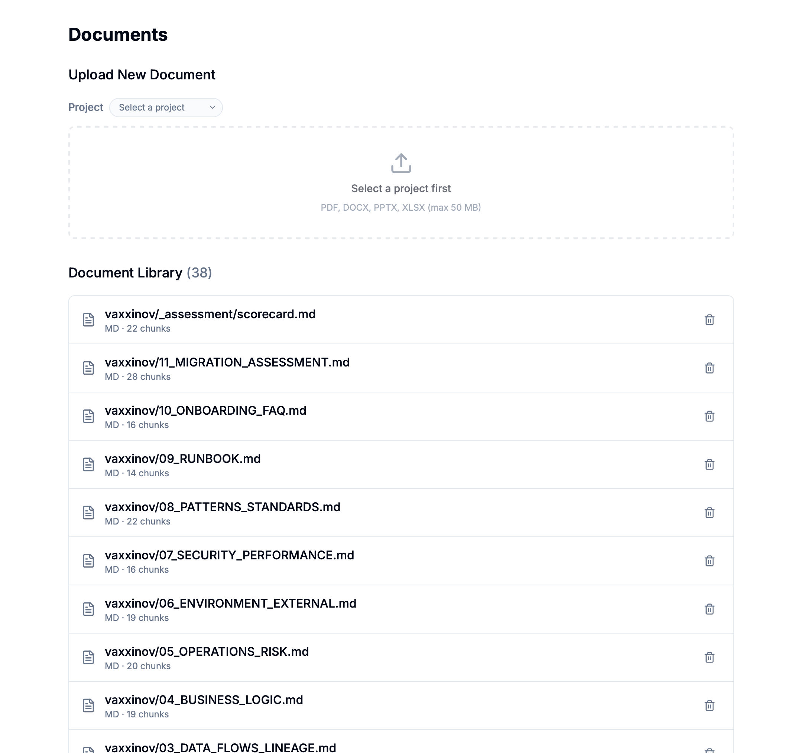
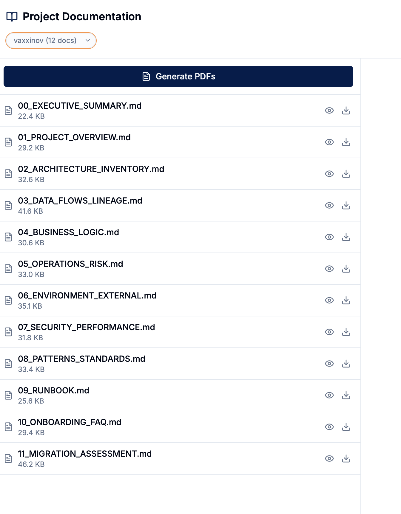
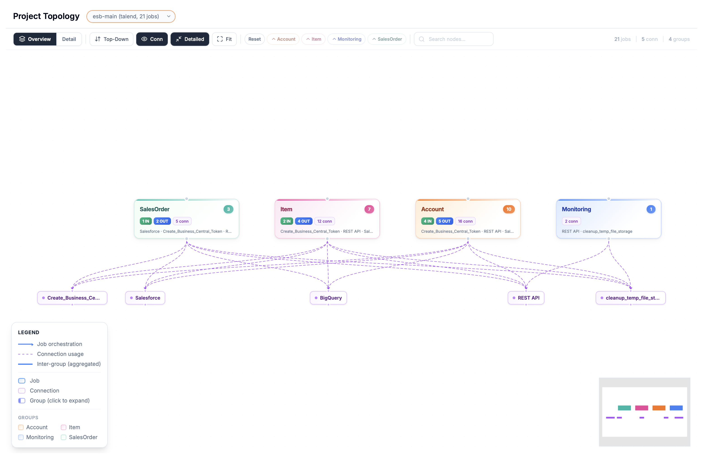
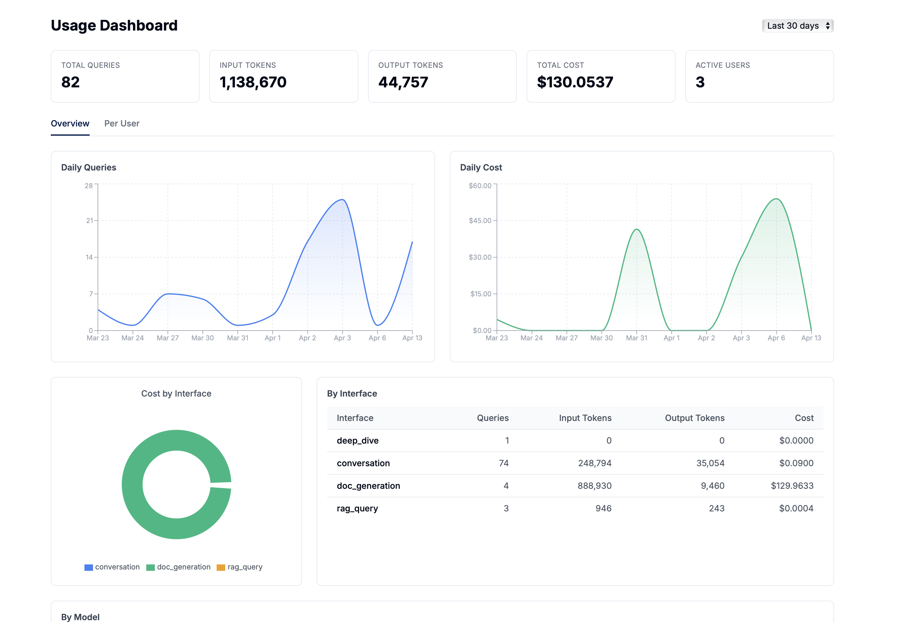
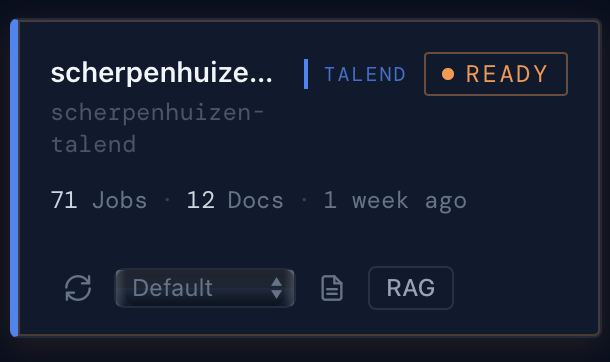

01 Login
When you open Nexus in your browser, you will see the login screen. Enter your username and password to get started.
-
Open Nexus in your browser
Navigate to the URL provided by your administrator (e.g.
https://nexus.yourcompany.com) -
Enter your username and password
We will provide a password and admin role for your organisation's domain.
-
Click "Login"
After a successful login, you will be redirected to the Chat page.
02 Navigation & Layout
On the left side of the screen you will find the sidebar, which lets you quickly navigate between all sections of Nexus.

Chat
Ask questions in Chat or Deep Dive mode with conversation memory
Documents
Upload and manage PDF, Word, PowerPoint and Excel files
Project Docs
View automatically generated project documentation
Topology
Interactive visual map of your project structure and connections
Settings & Admin
System health, usage dashboard, benchmarks, user management
The sidebar can be collapsed using the button at the top to give you more screen space. Below the navigation items you will find your conversation history — click on any previous conversation to reopen it. At the bottom of the sidebar you will see your username and a logout button.
03 Chat
The Chat page is the landing page of Nexus and provides a unified experience for asking questions about your documents. You can switch between Chat mode (quick RAG queries) and Deep Dive mode (in-depth project analysis) directly from the input bar.

How to use Chat
-
Start a new conversation
Click "+ New Chat" in the sidebar, or simply start typing in the input bar on the welcome screen.
-
Choose a mode
In the input bar at the bottom you will see two buttons: Chat and Deep Dive.
- Chat — Quick RAG query. The system finds relevant sections from your documents and generates an answer.
- Deep Dive — In-depth analysis of a specific project. Uses more context and provides more detailed answers.
-
Filter by project (optional)
Click the "All Projects" dropdown in the input bar and select a specific project to search only within that project.
-
Ask your question
Type a question in the text field and press Enter or click the send button. You can also click one of the suggestion cards on the welcome screen to get started quickly. Examples:
- "What projects are available?"
- "How do the integrations connect?"
- "What does the job LoadCustomerData do?"
-
View the live answer
The answer is streamed word by word. Source citations appear with each answer.
-
Ask follow-up questions
Chat remembers your context. You can ask things like "Can you tell me more about that?" or "What about the connections?"
-
Manage your conversations
Your conversation history appears in the sidebar below the navigation items. Click on a previous conversation to reopen it. Hover and click the trash icon to delete a conversation.
Chat vs. Deep Dive — When to use which?
💬 Chat
- Quick questions across all documents
- Remembers conversation context
- Faster response
- Ideal for lookups and general questions
🔍 Deep Dive
- In-depth analysis of a specific project
- Uses more context for detailed answers
- Richer, more comprehensive output
- Ideal for complex, project-wide analyses
04 Documents
On the Documents page you upload and manage the files that become searchable in Chat.

Uploading a document
-
Select a project
Choose the project you want to upload the document for in the dropdown at the top.
-
Upload your file
Drag the file into the upload area, or click the area to select a file.
-
Automatic processing
The system processes your file automatically: it is split into chunks, converted to vectors, and becomes immediately searchable.
Supported file formats
| Format | Description | Max size |
|---|---|---|
| PDF documents | 50 MB | |
| DOCX | Microsoft Word | 50 MB |
| PPTX | Microsoft PowerPoint | 50 MB |
| XLSX | Microsoft Excel | 50 MB |
| MD | Markdown files | 50 MB |
Document Library
At the bottom of the page you can see all uploaded documents. For each document you can see the filename, type, and number of chunks. Click the trash icon to delete a document.
05 Project Docs
The Project Docs page shows automatically generated documentation about your integration projects. These documents are created by the Nexus Dashboard.

-
Select a project
Choose a project from the dropdown at the top. You will see the number of docs (e.g. "12 docs").
-
Browse the document list
You will see all generated documents, numbered from 00 to 11, with their file size.
-
Preview a document
Click the eye icon next to a document to view it in the preview panel.
-
Download as PDF
Click the download icon next to a document, or click "Generate PDFs" to export everything.
Available documents
00_EXECUTIVE_SUMMARY.md
Management-level summary of the entire project
01_PROJECT_OVERVIEW.md
General overview: scope, components, statistics
02_ARCHITECTURE_INVENTORY.md
Technical architecture and complete component inventory
03_DATA_FLOWS_LINEAGE.md
Data flows, lineage and dependencies between jobs
04_BUSINESS_LOGIC.md
Business logic, transformation rules and calculations
05_OPERATIONS_RISK.md
Operational risks and points of attention
06_ENVIRONMENT_EXTERNAL.md
External environment, dependencies and integrations
07_SECURITY_PERFORMANCE.md
Security, performance and compliance aspects
08_PATTERNS_STANDARDS.md
Code patterns, standards and best practices
09_RUNBOOK.md
Operational handbook for daily management
10_ONBOARDING_FAQ.md
Frequently asked questions for new team members
11_MIGRATION_ASSESSMENT.md
Migration assessment: risks, complexity, recommendations
06 Topology
The Topology page provides an interactive visual map of your project structure. It shows how jobs, connections, and groups relate to each other, making it easy to understand complex integration projects at a glance.

How to use Topology
-
Select a project
Choose a project from the dropdown at the top. You will see the platform type and number of jobs (e.g. "esb-main (talend, 21 jobs)").
-
Choose a view mode
Use the buttons in the toolbar to switch between views:
- Overview — High-level view with groups collapsed into summary nodes
- Detail — Expanded view showing individual jobs within groups
- Top-Down — Hierarchical layout from top to bottom
- Conn — Focus on connections and their relationships
-
Filter by group
Click the coloured group chips in the toolbar to show or hide specific groups. Click "Reset" to show all groups.
-
Search for nodes
Use the search bar in the toolbar to find specific jobs or connections by name.
-
Interact with nodes
Click on a group node to expand it and see individual jobs. Hover over nodes and edges to see additional information.
-
Navigate the graph
Use scroll to zoom, drag to pan, and click the Fit button to fit the entire graph in view. A minimap in the bottom-right corner helps you orient yourself in large graphs.
07 Settings & Admin
The Settings page provides system health monitoring, usage analytics, and benchmark results. The Admin section (admin-only) lets you manage users, roles, and projects.
System Health
The Settings page shows the health status of all system components.
| Component | What is checked? |
|---|---|
| Database (PostgreSQL) | Is the database reachable and active? |
| Qdrant | Is the vector database online? |
| Ollama | Are the AI models available? |
| Version | Which version of Nexus is running? |
Usage Dashboard
The Usage Dashboard (under Admin > Usage) provides an overview of platform usage and costs.

| Metric | Description |
|---|---|
| Total Queries | Number of queries processed in the selected time period |
| Input / Output Tokens | Token usage across all AI interactions |
| Total Cost | Estimated cost of AI model usage |
| Active Users | Number of unique users in the period |
| Overview / Per User | Switch between aggregate view and per-user breakdown |
Benchmark Results
The Benchmark page (under Admin > Benchmark) shows the results of RAG quality benchmarks. Use these metrics to evaluate and tune your retrieval pipeline.

| Metric | Description |
|---|---|
| Precision@5 | How many of the top 5 retrieved chunks are relevant |
| Relevance | Overall relevance score of retrieved results |
| Avg Latency | Average response time for queries |
| Cost | Cost per benchmark run |
docker-compose ps.
08 Nexus Dashboard
The Nexus Dashboard is a separate management system where projects are scanned and documentation is automatically generated. It runs on a different URL than the Knowledge Base.

What do you see on the Dashboard?
Projects
All registered projects with type (Talend/Workato), number of jobs and documents
Templates
Reusable templates that determine what information goes into the documentation
Profiles
Combinations of templates for different documentation styles
Docs
View and manage generated documentation per project
Project card — Actions per project


Each project card shows the name, platform type, status, and number of jobs/docs. At the bottom you will find four action buttons:
| Button | Function | Description |
|---|---|---|
| ↻ Sync | Reload project data | Re-scans the source code and updates the job inventory |
| Default ▾ | Choose profile | Select which template profile is used for documentation generation |
| 📄 Docs | Generate documentation | Starts the AI documentation process — generates 12 Markdown documents |
| RAG | Push to Knowledge Base | Pushes the generated documents to the RAG database, making them searchable via Chat |
- Add a project via "Add Repo"
- Click ↻ Sync to scan the source code
- Choose a profile (or use "Default")
- Click 📄 Docs to generate documentation
- Click RAG to push the docs to the Knowledge Base
- Go to the Knowledge Base and chat about your new documents!
09 Architecture
Nexus consists of two independent systems that work together:
USER
|
+------------+------------+
v v
+-------------------+ +--------------------+
| Knowledge Base | | Nexus Dashboard |
| Next.js | | React |
| | | |
| - Chat | | - Projects |
| - Documents | | - Templates |
| - Project Docs | | - Profiles |
| - Topology | | - Doc Generation |
+---------+---------+ +---------+----------+
| |
v v
+-------------------+ +--------------------+
| Backend API | | MCP Server |
| FastAPI | | REST + MCP |
+---------+---------+ +--------------------+
|
+---------+---------+----------+
v v v
+----------+ +-----------+ +---------+
|PostgreSQL| | Qdrant | | Ollama |
|Database | | Vector DB | |AI Models|
+----------+ +-----------+ +---------+
| Component | What does it do? |
|---|---|
| Knowledge Base (Next.js) | The web app you see as a user — Chat, Documents, Project Docs, Topology |
| Nexus Dashboard (React) | Management of projects, templates and documentation generation |
| Backend API (FastAPI) | Processes search queries, document ingestion, authentication and access control |
| MCP Server | Orchestrates AI documentation generation with Claude Code |
| PostgreSQL | Stores users, documents, conversations and statistics |
| Qdrant | Vector database — enables searching through documents |
| Ollama | Runs local AI models for embeddings and answers |
10 Frequently Asked Questions
How do I add a new project?
Open the Nexus Dashboard, click "Add Repo", enter the project name and path to the source code, select the platform type (Talend, Workato, etc.) and click save.
Why am I not getting results?
Check whether documents have been uploaded for the selected project. Try a different phrasing. Check whether the correct project is selected in the filter. Make sure documents have been ingested (check the Documents page for chunk counts).
How do I make documents searchable?
There are two ways: (1) Manual: upload files via the Documents page, or (2) Automatic: generate documentation via the Nexus Dashboard and click "RAG" to push them to the Knowledge Base.
Can I delete documents?
Yes. Go to the Documents page and click the trash icon next to the document. The document will be removed from both the database and the vector database.
What is the difference between Chat and Deep Dive?
Chat quickly searches through your documents and gives a concise answer. Deep Dive performs a more extensive analysis and provides a more detailed answer, specifically focused on a project. Both modes are available from the input bar at the bottom of the Chat page.
What is the Topology page?
The Topology page provides an interactive visual map of your project's structure. It shows jobs, connections, and groups as nodes in a graph, with edges showing how they relate to each other. You can switch between Overview, Detail, Top-Down, and Connection views, filter by group, and search for specific nodes.
How do I reset my password?
Contact an admin. They can reset your password via the Admin panel.
Which AI models are used?
Nexus uses local models via Ollama: nomic-embed-text for embeddings and gemma3:12b (or llama3.1:8b) for generating answers. No external APIs are used — all data stays local.